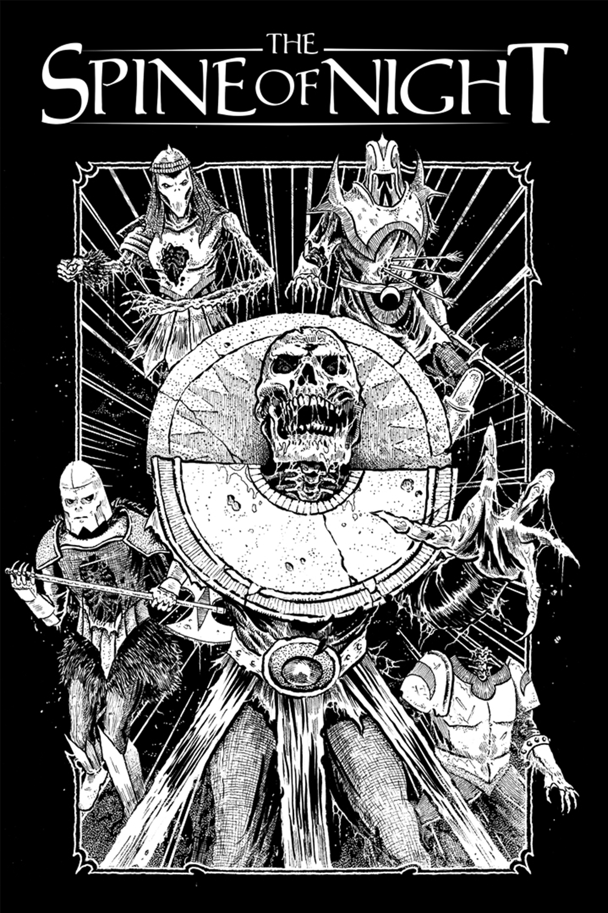

Spine of the Night - Review
- Directed by Philip Gelatt and Morgan Galen King
- Genres: Horror, Fantasy, Animation, Action
- Watched 8 Oct. 2023
The Spine of Night by Philip Gelatt & Morgan Galen King was everything I could ever want, but yet I was still disappointed.
This film is supposed to be a love-letter to Ralph Bakshi, using rotoscope animation techniques. It's a dark fantasy filled with gore and nudity. It seems right up my alley, an honest tale in a world that I can explore, yet it still wasn't what I wanted.
The execution is just so lacking. I genuinely don't know what went wrong. There were amazing people across the board working on this film, yet it still wasn't as good as I expected it would be. The script is very lack-luster, the dialogue feels unnatural in the way it's written. Characters that get introduced just get abandoned the second after they've had their 10 minutes of fame. The world has beautiful pieces when it comes to the animation, but nothing gets explained, nothing reaches the magical feeling I want in a film like this.
Not only did the script and plot bother me a lot, the voice acting of the main villain, Ghal Sur, which is supposed to be a scary and disturbing character sounds absolutely awful. The way Jordan Douglas Smith delivered his lines and the way his voice sounded just doesn't match up with his character was even laughable to some extent. Especially his evil laugh sounds like it could've been delivered by a literal child which favorite anime is Dragon Ball Z. Most of the voice acting felt like it was meant more as a comedy for Adult Swim, then a very dark and grim fantasy. Why is Patton Oswalt here?
The animation throughout is quite beautiful, I can't disagree with that. However I do have some nitpicks, why weren't there any shadows in the characters' animation while the backgrounds were incredibly detailed. Why were there still lipflaps after the characters were done talking. The action sequences also felt very slow and clunky. It's just small details, but as an entire experience it still bothers me a lot.
Of course there are some very memorable things about this film, like the soundtrack and the sounddesign, which makes it a much more immersive experience. Other things I liked was the origin of the gods, which was a beautifully animated sequence, this was the actual first time I felt pulled into the film's universe. The ending of the film was also very strong, with a very great final battle between Ghal Sur. Still, both of these things still don't save this film and I'm quite disappointed as I was very, very hyped for this film.
However, hopefully these two do go on to make more films like this, as I feel like we need more like, but just of better quality. I will be watching out for their next feature.
